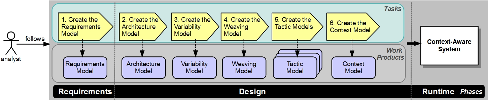

| Introduction |
|
Relationships
| Contents |
|---|
Main Description
This methodology can be used to create the models that guide the dynamic evolution of context-aware systems at runtime. Figure 1 depicts this methodology. Specifically, tasks (assignable units of work) are followed by the Analyst role. Tasks generate work products, which are the models and artifacts to support the dynamic evolution of the system. Figure 1. Methodology. |